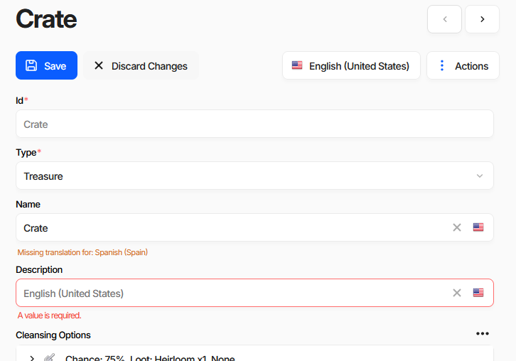
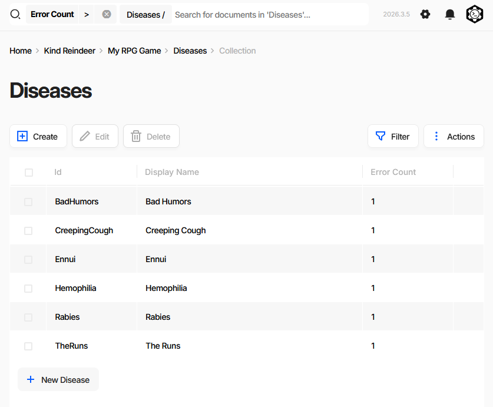
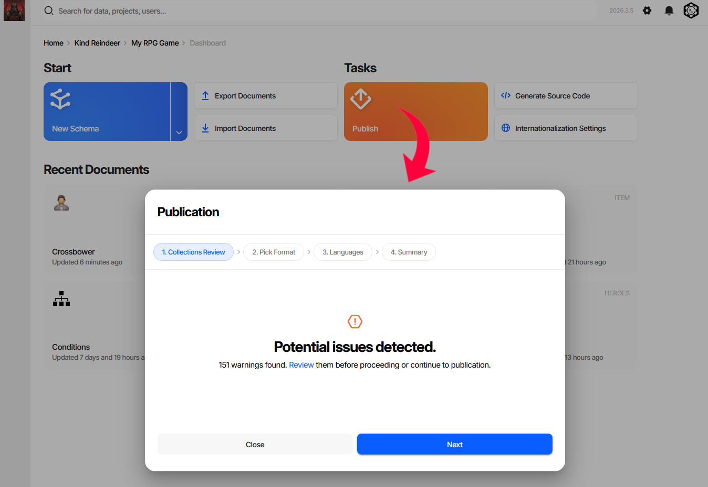
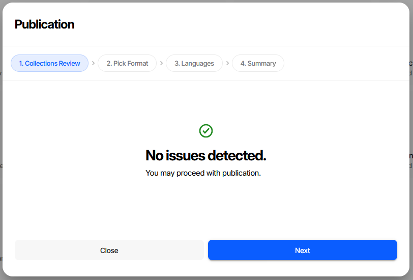
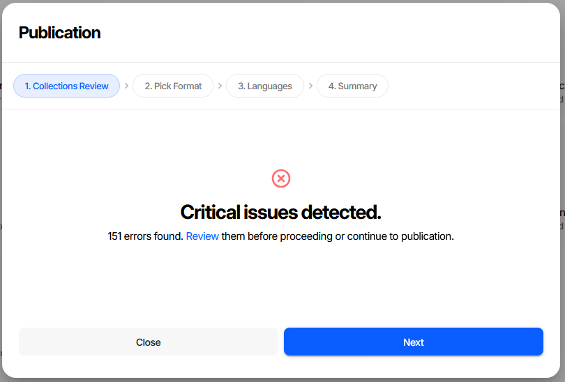
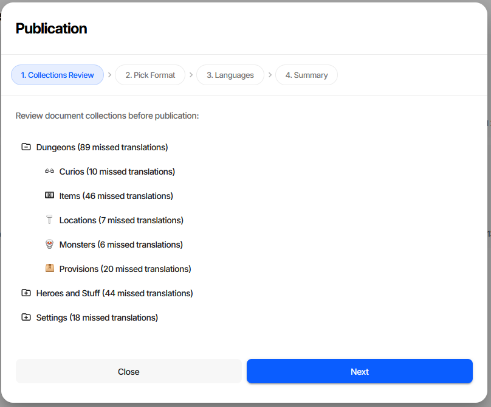

Validation
Charon validates game data at several points in the editing lifecycle: while a document is being edited,
on every save, on import, before publication, and on demand via DATA VALIDATE. The editor surfaces
problems where you will run into them; the CLI exposes the same engine through a flag system you can tune
for bulk workflows such as CI pipelines or large data migrations.
Where Validation Appears in the Editor
Three places, in the order you normally meet them:
The document form - per-field errors while editing and after a rejected save.
A collection’s error view - the list of documents in one collection that currently have errors.
The Publication wizard - a project-wide review of every collection before you ship.
Errors in the Document Form

Two kinds of message appear under a field, and they behave differently:
Red - an error.
A value is required.in the screenshot. The server rejects the save until it is fixed, or until you explicitly bypass validation.Orange - a warning.
Missing translation for: Spanish (Spain). Checked in the browser only, never blocks a save. See Internationalization (i18n) for filling these in.
When a save is rejected, the Save button changes to Save Anyway and shows a badge with the number of errors. Clicking it again writes the document with checks turned off - repairs still run, but nothing is reported. Use it for work in progress you intend to fix later; the document keeps its error count and shows up in the views below until it is fixed.
Keyboard shortcuts on the Save button:
Shortcut |
Action |
|---|---|
Ctrl + S |
Save |
Ctrl + click |
Save & close |
Shift + click |
Save ignoring errors |
Saving a document runs repair, repairRequiredWithDefaults and all six integrity checks.
It does not run checkTranslations - that is why a missing translation is only a warning here.
Finding Documents with Errors
Every collection has a built-in errors view: the document list with an Error Count column, filtered to
Error Count > 0.

The fastest way to reach it is the Publication wizard - clicking a collection in the review tree opens that collection already filtered this way. The filter chip stays visible in the search bar, so you can clear it to return to the full list.
Error counts come from a background pass over the whole database using the six integrity checks plus
checkTranslations. This is a wider profile than the one used when saving, so a document can be clean at
save time and still be counted here - untranslated text being the usual reason.
Reviewing Before Publication
Publish on the dashboard opens the Publication wizard. Its first step, Collections Review, is a project-wide validation report.

The step opens with a summary in one of three states. Above is the middle one - warnings, meaning missing translations only. Publication will succeed; the shipped data will have gaps in the affected languages.

No issues - nothing to fix, proceed.

Critical issues - real integrity errors: broken references, missing required values, format problems. Fix these before publishing. Generated code and game-side loaders assume the data satisfies the schema, so a dangling reference or a missing required value usually shows up at runtime as a null reference or a failed load rather than as anything visible in the editor.
Review replaces the summary with a per-collection tree:

Each node is annotated with what was found: N issues counts integrity errors, N missed translations
counts untranslated text. Collections with nothing wrong are marked with a check. Clicking a collection
opens its errors view, described above.
Warning
Publication is never blocked - Next stays enabled in all three states. Treat the two severities
differently. Missed translations ship as visible gaps in the affected languages: undesirable, but the
game runs. Critical issues are broken data that will most likely crash the game or fail to load, and
should be fixed before publishing rather than after. To enforce a clean state automatically, run
DATA VALIDATE --output err in CI; see Exit Code Behaviour.
CLI equivalent
DATA EXAMINE returns the same per-collection statistics that populate the review tree:
Added in version 2026.4.0.
dnx dotnet-charon -- DATA EXAMINE --dataBase "gamedata.json"
DATA VALIDATE returns the individual errors behind those counts:
dnx dotnet-charon -- DATA VALIDATE \
--dataBase "gamedata.json" \
--validationOptions checkRequirements checkFormat checkUniqueness \
checkReferences checkSpecification checkConstraints checkTranslations \
--output out --outputFormat json
When Validation Runs
Throughout this page, the six integrity checks means checkRequirements, checkFormat,
checkUniqueness, checkReferences, checkSpecification and checkConstraints.
Trigger |
Checks and repairs applied |
|---|---|
Document save (UI / API CREATE or UPDATE) |
|
Document save with Save Anyway |
repairs only - no integrity checks |
|
|
|
|
|
the six integrity checks |
Error counts and publication review |
the six integrity checks plus |
Warning
Both import commands default to repairs without integrity checks. They fix what they can and
report nothing else - broken references or missing required values land in the data silently.
Pass --validationOptions explicitly, or follow the import with a DATA VALIDATE run,
whenever the input is not fully trusted.
All defaults can be overridden with --validationOptions on the relevant command.
Validation Flags
Flags are combined to form a validation profile. Pass multiple flags as space-separated values:
dnx dotnet-charon -- DATA VALIDATE --dataBase gamedata.json \
--validationOptions checkRequirements checkReferences checkFormat
Integrity check flags
These flags report errors without modifying data.
checkRequirementsEvery property marked Not Null or Not Empty must have a value.
checkFormatValues must match the declared data type format - e.g.
Datemust be ISO 8601,Numbermust not be a string,PickListvalue must be in the defined list.checkUniquenessProperties marked Unique or Unique In Collection must have no duplicates.
checkReferencesEvery Reference and ReferenceCollection must point to a document that exists.
checkSpecificationValues must satisfy constraints declared in the Specification field of the schema or property (used by extension editors and code-generation plugins).
checkConstraintsStructural invariants: valid pick-list values, formula syntax, collection size limits defined via
Sizeon the property.checkTranslationsEvery LocalizedText field must have a translation for each language declared in Project Settings. Detects untranslated strings before shipping. Not included in any default profile except the background pass - request it explicitly.
Repair flags
Repair flags automatically fix certain problem classes before integrity checks run. They modify the data in-place (or within the import transaction).
repairMaster switch - without it the repair pass is skipped entirely and the other repair flags have no effect.
deduplicateIdsIf multiple documents in the same collection share the same
Id, each duplicate gets a new auto-generated Id.repairRequiredWithDefaultsA missing required field is filled with the property’s Default Value if one is defined.
eraseInvalidValuesA field whose value cannot be parsed as the declared data type is set to
null.resolveConflictingUnionsFixes malformed Union values: a union with two or more variants set keeps the last variant in schema order and drops the rest; an empty union with no variant set is erased to
null.
Validation Report Format
Both DATA VALIDATE and DATA IMPORT can emit a structured validation report:
{
"records": [
{
"id": "<document-id>",
"schemaId": "<schema-id>",
"schemaName": "<schema-name>",
"errors": [
{
"path": "<json-pointer to field>",
"message": "<human-readable description>",
"code": "<machine-readable error code>"
}
]
}
]
}
Documents with no errors are omitted. An empty records array means the data is valid.
Exit Code Behaviour
The exit code is 1 only when the report contains errors and --output is set
to err (standard error). In all other cases the exit code is 0, even if the report
file contains errors.
This design makes it easy to use validation in CI:
# Fail the pipeline if there are any integrity errors
dnx dotnet-charon -- DATA VALIDATE --dataBase gamedata.json \
--validationOptions checkRequirements checkReferences checkFormat \
--output err
# Exit code 1 → CI step fails
# Write report to a file without failing the step
dnx dotnet-charon -- DATA VALIDATE --dataBase gamedata.json \
--output validation_report.json --outputFormat json
# Exit code 0 → CI step passes; inspect the file separately
Common Recipes
Skip all checks (import prototype data)
dnx dotnet-charon -- DATA IMPORT --dataBase gamedata.json --input prototype.json \
--validationOptions none
The UI equivalent is the Ignore consistency errors in imported data checkbox in the import wizard.
Auto-repair + full check on import
dnx dotnet-charon -- DATA IMPORT --dataBase gamedata.json --input data.json \
--validationOptions repair deduplicateIds repairRequiredWithDefaults \
checkRequirements checkReferences checkFormat
Fix union conflicts after schema refactor
dnx dotnet-charon -- DATA IMPORT --dataBase gamedata.json --input data.json \
--validationOptions repair resolveConflictingUnions
Check for untranslated strings
Reproduces what the publication review counts as missed translations:
dnx dotnet-charon -- DATA VALIDATE --dataBase gamedata.json \
--validationOptions checkTranslations --output out --outputFormat json
Gate a build on a clean publication review
dnx dotnet-charon -- DATA VALIDATE --dataBase gamedata.json \
--validationOptions checkRequirements checkFormat checkUniqueness \
checkReferences checkSpecification checkConstraints \
--output err
Dry Run vs Validate
DATA VALIDATEchecks the current state of the database.DATA IMPORT --dryRunsimulates the full import pipeline inside a transaction, then rolls back. Use this to preview the post-import state and catch referential errors before committing. The UI equivalent is the Perform a dry run and don’t persist changes checkbox.